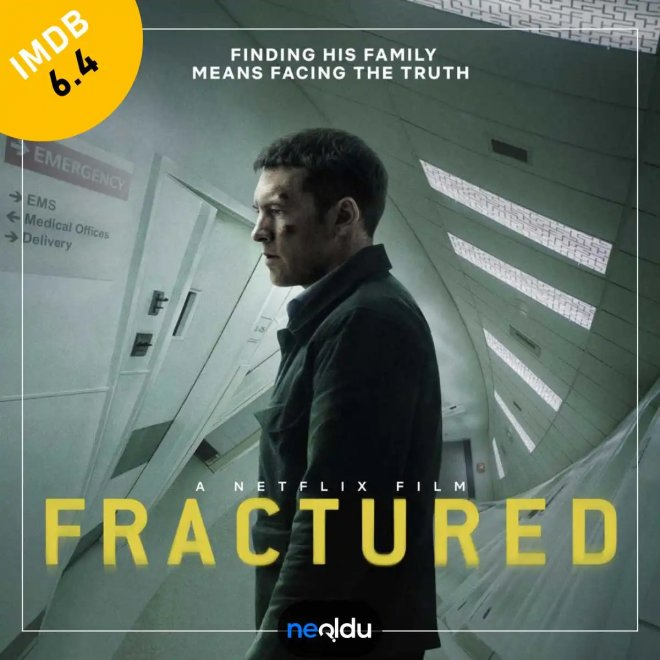

Roy, trafik kazası sonucu kolu kırılan kızını, eşiyle birlikte hastaneye götürür. Tomografi odasına giden kızı ve eşi uzun süre geri dönmezler. Beklerken uyuya kalan Roy, hastane yetkililerinden akıl almaz yanıtlar alır. Kızının ve eşinin hastanede herhangi bir kaydının olmadığını ve hiçbir zaman gelmediklerini söylerler.
